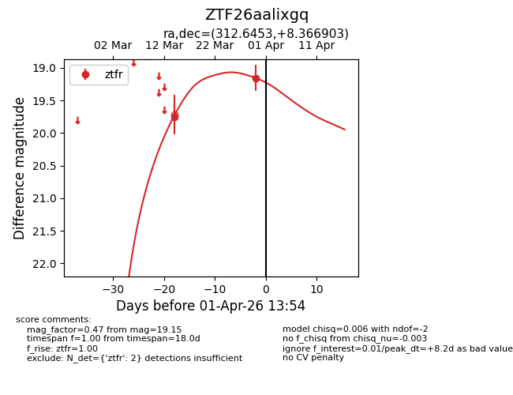
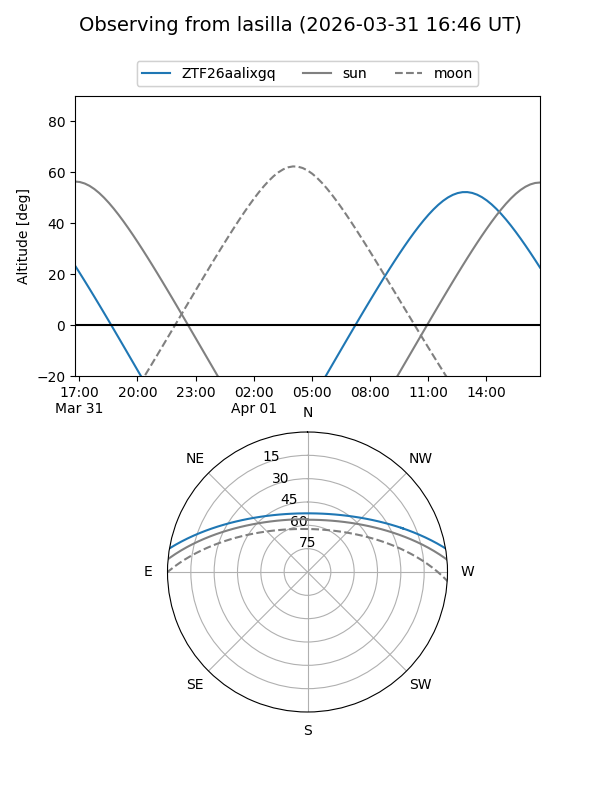
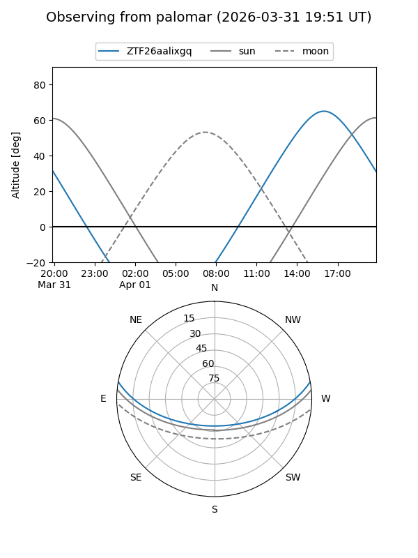
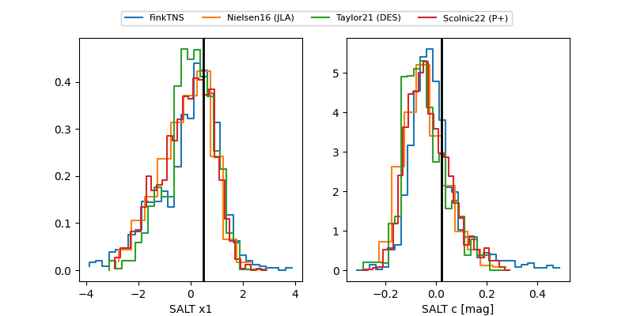

ZTF26aalixgq
Target ZTF26aalixgq at 2026-04-01 13:58
Aliases and brokers:
FINK: link
Lasair: link
ALeRCE: link
alt names
ZTF26aalixgq (ztf,fink_ztf)
Coordinates:
equatorial (ra, dec) = 312.6453,+8.36690
equatorial (HMS+DMS) = 20:50:34.86,+08:22:00.85
galactic (l, b) = (55.3146,-21.78055)
Flags:
Photometry:
last ztfr=19.15
2 ztfr detections
Lightcurve

Visibility


Additional plots
